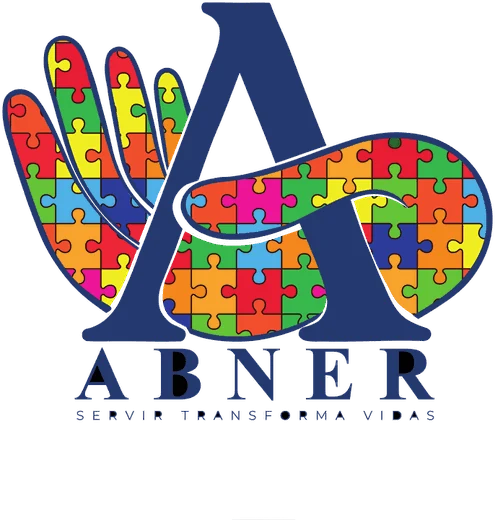
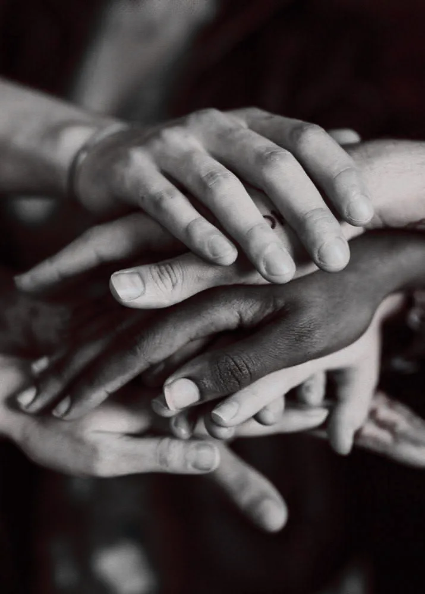
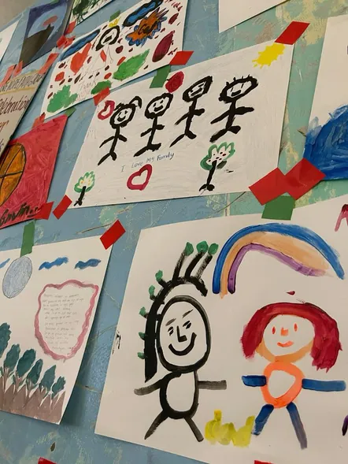
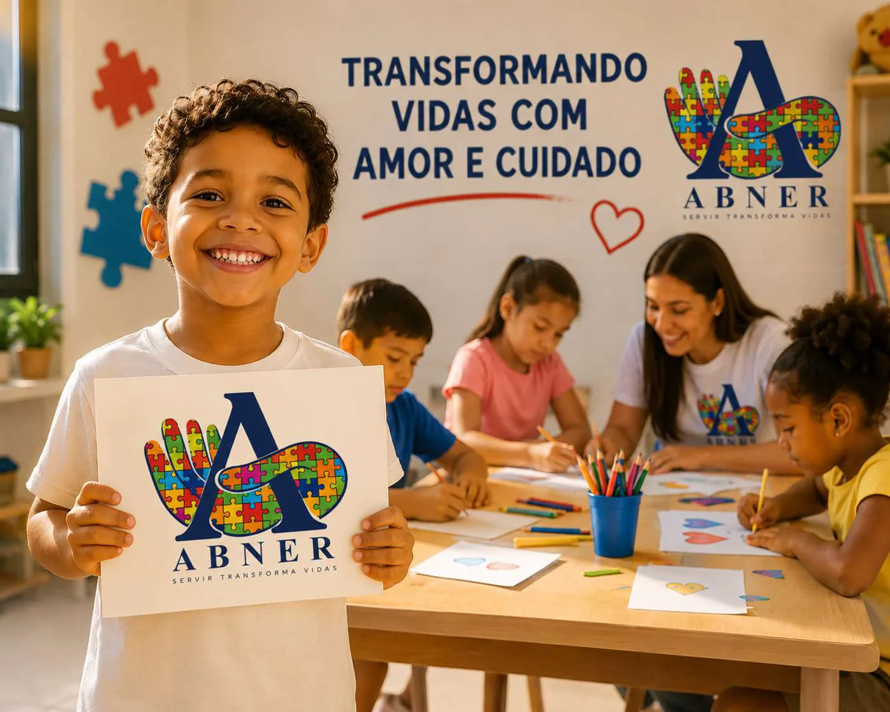
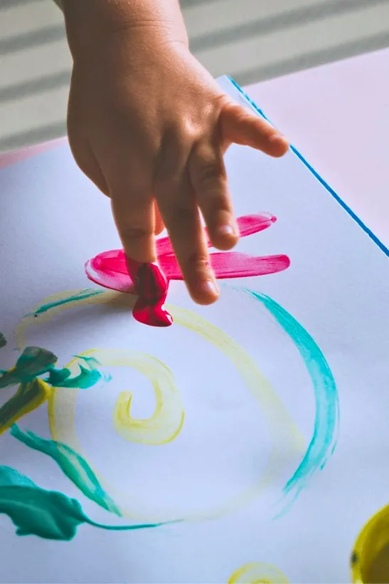
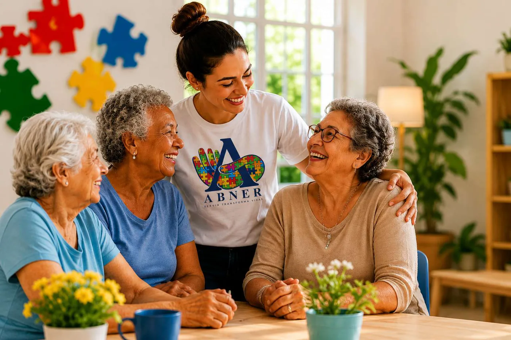
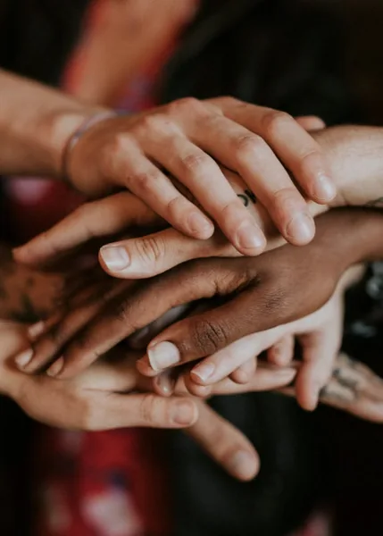

Servir
Sair do lugar e ir até quem precisa, com as próprias mãos.
Servir · Empatia · Inclusão
Servir transforma vidas
O Instituto Abner leva alimentação, acolhimento e cuidado a crianças, famílias, idosos e animais em situação de vulnerabilidade. Cada peça desse quebra-cabeça é uma pessoa — e nenhuma peça sobra.

Cada peça importa. Cada pessoa importa.
Inclusão em primeiro lugar
Nosso símbolo é a letra A acolhida por uma mão de quebra-cabeça: a mão que serve e cuida.
Nossa história
Um nome que é uma homenagem
O nome do projeto é uma homenagem ao Abner, filho da fundadora, um menino autista que ensina, todos os dias, que o amor fala todas as línguas.
Por isso, nosso símbolo é a letra A acolhida por uma mão de quebra-cabeça colorido: a mão que serve e cuida, e cada peça representando uma pessoa.
O Instituto Abner nasceu do sonho de transformar ações solidárias em um projeto social capaz de gerar um impacto ainda maior na vida das pessoas. Antes mesmo de sua criação oficial, ações voluntárias de apoio a famílias em situação de vulnerabilidade já eram realizadas.
Hoje, o Instituto Abner fortalece esse propósito, ampliando seu alcance e promovendo esperança, dignidade e transformação social.
Servir transforma vidas

Nossa missão
Servir, acolher e transformar vidas por meio da solidariedade, da empatia e do amor ao próximo.
Dignidade
Cada atendimento começa pelo respeito. Ninguém deveria precisar abrir mão da dignidade para receber ajuda.
Esperança
Levar alimento é o começo. O que fica é a certeza de que alguém se importa e vai voltar.
Oportunidades
Ações sociais que impactam positivamente crianças, famílias, idosos e animais em situação de vulnerabilidade.

Empatia
Enxergar a história de cada pessoa antes da necessidade dela.

Inclusão
Cada peça importa. Cada pessoa importa. Sem exceção.
Quem ajudamos
Cuidamos de quem mais precisa de amor e atenção
Crianças
Alimentação, carinho e apoio para quem está começando a vida.
Famílias
Cestas básicas e apoio para lares em situação de vulnerabilidade.
Idosos
Cuidado e companhia para quem já cuidou tanto de nós.
Animais
Ração, proteção e amor também para os que não falam.
O que fazemos
Ações simples que mudam o dia — e a vida — de muita gente

Alimentação
Cestas básicas e alimentos para famílias, crianças e idosos.
Apoio a igrejas
Parceria com igrejas que conhecem de perto as necessidades da comunidade.
Casas de apoio
Suporte a lares que acolhem pessoas em momentos difíceis.
Causa animal
Ração e cuidado para animais abandonados e resgatados.
Como funciona
Do gesto de doar até chegar a quem precisa
Arrecadação
Doações de alimentos, ração e recursos de pessoas e empresas parceiras.
Montagem
As cestas e os kits são montados com carinho, pensando em cada família.

Entrega
Levamos tudo até famílias, igrejas, casas de apoio e abrigos.
Acompanhamento
Mantemos o vínculo com quem recebe, porque cuidar é contínuo.
Momentos
O amor em ação, todos os dias




Como você pode ajudar
Toda ajuda cabe: grande ou pequena, ela sempre chega a alguém
Doe
Alimentos não perecíveis, ração, produtos de higiene ou qualquer valor. Tudo vira cuidado.
Quero doarSeja voluntário
Ajude na montagem das cestas e nas entregas. Seu tempo vale ouro para quem espera.
Quero servirDivulgue
Compartilhe o projeto com amigos, família e nas redes. Uma indicação já leva alguém até nós.
Seguir no Instagram
Junte-se a nós
Cada peça desse quebra-cabeça é uma pessoa como você
Fale com a gente pelo Instagram: é por lá que combinamos doações, entregas e mutirões de voluntários. Sua mensagem chega direto em quem organiza tudo.
@institutoabner.r · Servir transforma vidas